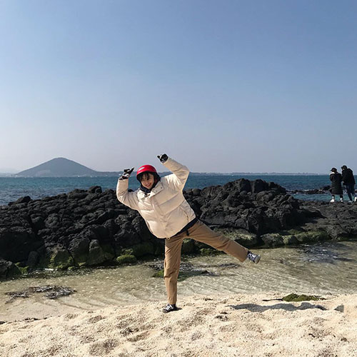
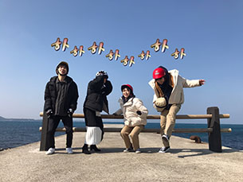

개강 전, 해외는 못 가더라도 국내 여행은 가보고 싶어서 제주도로 여행을 계획했다. 첫 날 부터 가려던 맛집은 휴무 날이고, 가려던 관광지는 금방 마감시간이 되어서 가지도 못하고 무의미한 1박을 보내게 되었다. 밥도 제대로 못 먹고 가고싶던 곳도 못 가서 기분이 안 좋았던 첫 날이었다.
둘째 날은 일찍 일어나서 우도로 갔다. 총 네명에서 갔지만 다들 면허가 없어서 전기 자동차는 못 빌리고 다들 귀엽게 전기 자전거를 빌렸다. 약간 오토바이?같은 느낌이었지만 아주 재미지게 탔다. 하지만 막판에 트럭을 피하다가 넘어져서 무릎이랑 손바닥이 쓸려서 아팠지만 재밌는 우도 한바퀴였다.
